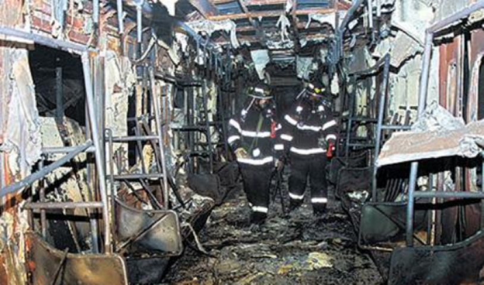
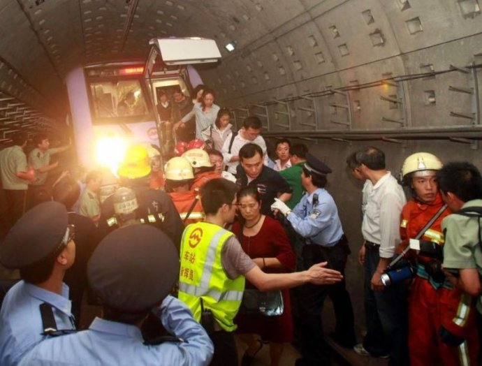
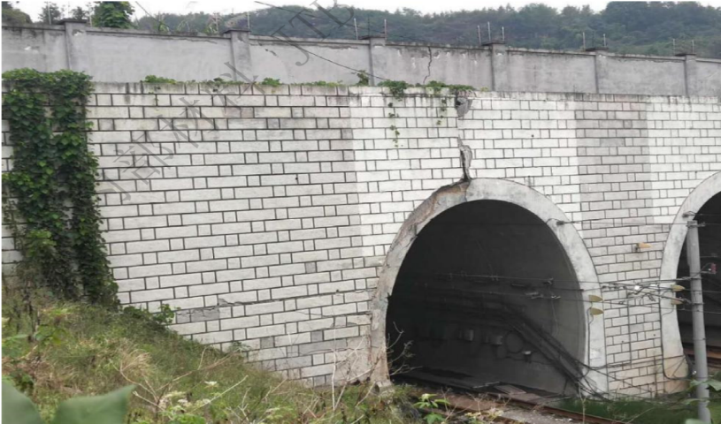
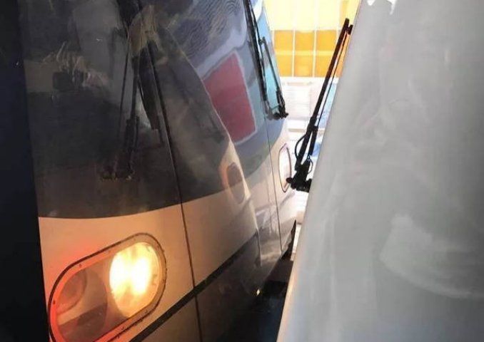

城市轨道交通—案例题
已完成:
0
/40
（361）2020年6月19日，某市轨道交通线路发生一起弓网冲突事件。该事件因接触网定位管斜支撑与定位管连接处松脱、定位管下垂侵限所致，第三方机构检测认为接触网铝合金支撑管连接件产品结构设计存在缺陷，受线路长期低频振动影响，连接件内部螺纹产生微动磨损，最终导致其松脱（如下图所示）。经查，该线路在开通前未对涉事物件进行相关检测，线路开通后也未对其进行定期检查、检测评估，在设计缺陷情况下长期缺失养护维修工作。
对于案例中涉及的城市轨道交通运营设施设备相关要求，下列描述
错误
的是
____
。
运营单位应当建立健全本单位的城市轨道交通运营设施设备定期检查、检测评估、养护维修、更新改造制度和技术管理体系
案例中的连接件等部件不是接触网关键部件，不需要专项监视测量并进行养护维修
运营单位建立的设施设备定期检查、检测评估、养护维修、更新改造制度和技术管理体系不需要向城市轨道交通运营主管部门备案
本事件是产品设计存在缺陷导致，运营单位不用承担任何责任
新建城市轨道交通线路投入运营前需要开展弓网关系的联动测试
（362）2020年5月21日至22日，某市出现特大暴雨，大量水体聚集形成局地洪水，某地铁线路车站周边路面水深最大达1.85米，洪水倒灌至区间隧道，短时间内淹没近6300米隧道，积水量40.1万立方米，造成线路停运22天，供电、通信、信号等行车类设备受损设备数量达7700余台套。
对于案例中涉及的车站淹水倒灌等相关问题，下列描述正确的是
____
。
案例所述风险主要在南方，北方常年干旱的城市雨不会太大，发生重大洪涝灾害的风险不大
如果不在汛期，新建城市轨道交通线路投入运营前，排水系统可以不与城市排水系统连通，只要在汛期前完成连通就可以了
车站出入口、风亭、消防通道、洞口、地上地下过渡段、在建线路与既有线路连接处等都是容易发生淹水倒灌的薄弱部位
案例所述事件没有造成人员伤亡，不属于运营险性事件
雨水多的地铁车站出入口建筑不应在地势低洼区域
（363）2015年3月25日，某市地铁车辆段在试车线测试时冲出车辆段，列车1至4节车辆脱轨并穿过相邻公路，列车车头受损，列车驾驶员腿部受伤，如下图所示。事件发生的主要原因是：负责调试工作的驾驶员在调试列车驾驶过程中精神状态不佳、注意力不集中，未在规定制动点及时对列车施加制动，导致列车超速冲撞车挡、脱轨。
对于案例中涉及的试车作业相关要求，下列描述正确的是
____
。
只要保持安全距离，试车线同一时间可以同时允许多列车进行试车作业
试车作业开始前应对试车线进行限速轧道
试车作业应按地面信号或车载信号显示运行
距离尽头线阻挡信号机20米时，列车运行速度不应高于15km/h，距离5米时必须停车
遇雨雪、大雾等恶劣天气导致瞭望距离不足时，禁止办理试车作业
（364）2019年1月8日，某市地铁线路区间人防门侵限，与列车发生碰撞，造成1名乘客和2名列车司机受伤，线路部分区段停运，如下图所示。事件发生的主要原因是：人防门安全锁定装置未处于工作状态，主安全锁紧装置下摇锁头未伸入锁座孔内，辅助安全装置门后拉杆处于弱连接状态，在隧道区间活塞风反复作用下脱离，导致人防门侵限，与列车发生碰撞。
对于案例中涉及的轨行区设施设备以及行车组织相关要求，下列描述正确的是
____
。
声屏障、防火门、人防门、防淹门等应安装牢固
运营开始前，行车调度人员确认线路具备条件后，应安排空驶列车限速轧道，确认线路安全后，方可开始运营
在轨行区等重点区域由外单位进行施工作业的，运营单位应安排专人旁站监督
遇突发严重危及行车安全的情况，司机可先行采取紧急安全防护措施，再报告行车调度人员
上述案例在地铁全自动运行系统不会发生
（365）（365）2021年3月4日，某市地铁隧道被外部钻探施工击穿，钻杆探入隧道2.56米，造成线路下行区间停运约1小时43分。事件发生的直接原因是勘察单位在某大学垃圾中转站地质勘察作业实施前，未核实地铁保护区范围，擅自在保护区范围内进行勘察作业，导致地铁隧道被打穿。
对于案例中涉及的保护区相关要求，下列描述正确的是
____
。
城市轨道交通工程项目应当按照规定划定保护区，保护区内不允许任何施工作业
城市轨道交通线路开通初期运营前，建设单位应当向运营单位提供保护区平面图，并在具备条件的保护区设置提示或者警示标志
在城市轨道交通保护区内进行桩基础施工、钻探作业，应当按照有关规定制定安全防护方案，经运营单位同意后，依法办理相关手续并对作业影响区域进行动态监测
运营单位可以进入保护区内作业现场进行巡查，发现危及或者可能危及运营安全的情形，有权予以制止，并要求相关责任单位或者个人采取措施消除妨害
城市轨道交通沿线建（构）筑物、植物可能妨碍行车瞭望或者侵入线路限界的，责任单位应当及时采取措施消除影响
（366）2021年7月20日，某市地铁列车在区间行驶时遭遇涝水灌入、失电迫停，经疏散救援，共有953人安全撤出，造成14人死亡。根据国务院灾害调查组公布的报告，此次事件是一起由极端暴雨引发严重城市内涝，涝水冲毁停车场挡水围墙、灌入地铁隧道，地铁集团有限公司和有关方面应对处置不力、行车指挥调度失误，违规变更停车场设计、对挡水围墙建设质量把关不严，造成重大人员伤亡的责任事件。
对于案例中涉及的城市轨道交通工程项目管理以及应急处置等相关要求，下列描述正确的是
____
。
地铁停车场设计由建设单位和设计单位协商一致，不需要相关主管部门审批
因运营突发事件、自然灾害、社会安全事件以及其他原因危及运营安全时，运营单位可以暂停部分区段或者全线网的运营
因降雨、内涝等造成车站进水，严重影响客运服务的，行车调度人员可根据车站申请发布封站命令
线路积水超过轨面时，列车不得通过
地铁工程中的非主要部位，为加快建设进度，施工单位可采用白图施工
（367）2022年1月22日，某市地铁全自动运行线路1名乘客被夹在车门与站台门之间，后因应急处置不当，列车启动导致乘客死亡。
对于案例中涉及的全自动运行系统线路的相关要求，下列描述正确的是
____
。
全自动运行线路由信号系统控制实现车门、站台门自动打开、关闭，并控制列车站台自动发车，在车站站台不设置站台开门、关门按钮，减少车门与站台门的人工联动
全自动运行线路站台门被隔离时，列车运行至站台后自动隔离对应的车门，对应车门不执行开关门动作
全自动运行线路初期运营期间应配备具有驾驶技能的人员值守列车，全程关注列车运行状态，一旦发生列车故障或异常情况按规则及时处置
全自动运行线路的运营场景和风险点与非全自动运行线路基本一致，不需要专门制定风险管控措施和应急预案
对于全自动运行线路，应按复合岗位要求加强岗位职责优化，按全系统工作要求加强行车、客运、应急等规章制度修订整合
（368）2018年1月1日，某市一列有轨电车因车辆转向架故障回库维修，在驶离车站过程中，在站前交叉渡线区域挤岔脱轨。救援过程中列车主控手柄处于牵引位，列车复轨后再次发生溜逸，影响正常运营超过48个小时。
对于案例中涉及的行车组织以及列车挤岔应急处置相关要求，下列描述正确的是
____
。
列车需越过防护信号机显示的禁止信号时，行车调度人员确认该线路信号机后方线路空闲后，即可发布越过禁止信号的命令
列车驾驶员在接到行车调度人员越过禁止信号的命令后，应加强瞭望，确认该线路信号机后方线路空闲、道岔位置正确后，方可按规定速度越过禁止信号
有轨电车不得推进退行，牵引退行速度不应超过15km/h
列车发生挤岔时严禁擅自动车，行车调度人员应通知设备维修人员现场确认安全，具备条件后方可组织该列车动车
运营单位专项应急预案应涵盖列车脱轨、撞击、冲突、挤岔等重点内容
（369）2003年2月18日，韩国大邱地铁列车一名乘客点燃装满汽油的塑料瓶，列车进入中央路站停车，对向列车3分钟后驶入车站，也被引燃起火。事故最终导致198人死亡，146人受伤。调查发现，列车驾驶员、车站值班员以及控制中心行车调度员在应急处置时均有严重失职。

对于案例中涉及的地铁车辆设备以及火灾应急处置相关要求，下列描述正确的是
____
。
地铁车辆及其内部设施应使用不燃材料或无卤、低烟的阻燃材料
地铁客室、司机室应配置便携式灭火器具，安放位置应有明显标识并便于取用
列车应设置报警系统，客室内应设置乘客紧急报警装置，具备乘客向驾驶员报警的单向通信功能
列车在地下或高架线路发生火灾时，驾驶员应尽量维持列车进站，并立即报告行车调度人员，行车调度人员应通知车站和驾驶员组织乘客疏散；列车不能维持进站或继续运行无法确保安全的，应立即组织区间疏散
当地下和高架线路车站、区间发生火灾时，行车调度人员或车站行车人员应立即扣停可能驶入事发区域的列车；对于已经进入区间的列车，行车调度员应优先选择区间疏散，保障乘客安全
（370）2011年9月27日，某市城市轨道交通线路车站信号设备失电，部分区间采用电话闭塞方式行车过程中，列车发生追尾，组织乘客区间疏散，如下图所示。本次事件的主要原因是运营期间违规进行孔洞封堵作业，导致集中站信号设备意外失电；行车调度员在未准确定位故障区间内全部列车位置的情况下，违规发布电话闭塞行车命令；接车车站值班员在未严格确认区间线路是否空闲的情况下，违规同意发车站的电话闭塞要求，导致列车发生追尾碰撞。

对于案例中涉及的信号设备以及电话闭塞法相关要求，下列描述正确的是
____
。
地面ATP、ATS服务器、ATS车站分机、CI子系统、骨干网交换机、计轴等室内设备应采用两路独立的电源供电
一个联锁区联锁失效时，在保证行车安全的前提下，行车调度员可对故障影响区域使用电话闭塞法组织行车
启用电话闭塞法前应确认所有列车停妥，准确掌握实施电话闭塞与区内所有列车位置且进路准备妥当
电话闭塞法应使用纸质行车凭证，除了列车救援外，一站一区间或车辆基地至相邻车站只允许一列车占用
启用电话闭塞法时，首列车运行速度不应高于35km/h
（371）2015年4月20日，某市地铁车站一名乘客晕倒，引起站台不明情况的乘客恐慌奔逃，与进站客流流线严重交织，慌乱中部分乘客因磕碰、擦伤或摔倒而受伤。
对于案例中涉及的车站客运组织相关要求，下列描述正确的是
____
。
车站客流流线设置、设施设备布局等应综合考虑反恐防范、安检、治安防范和消防安全需要
车站工作人员应对车站出入口、站厅、站台、通道等公共区域进行巡视，巡视频率不低于每天一次，发现异常情况及时进行处理；遇客流高峰、恶劣天气、重大活动等情况，应根据需要增加巡视次数
站内或出入口乘客聚集可能造成客流对冲等情况时，可调整自动扶梯运行方向或暂时关闭自动扶梯，危及乘客安全时，可暂时关闭出入口
车站发生火灾、淹水倒灌、公共安全、公共卫生等突发事件时，车站工作人员应当报告行车调度部门，按照应急预案进行现场处置，必要时采取关闭出入口、疏散站内乘客、封站等措施
城市轨道交通运营主管部门应制定本地城市轨道交通乘客乘车规范。乘客应遵守乘车规范，听从车站工作人员的合理指示和要求；发生突发事件需要疏散时，乘客应服从工作人员指挥和引导有序疏散
（372）2019年12月31日，某市地铁线路发生区段接触网故障，导致区间列车服务中断，其他区间列车行车间隔不同程度增加，沿线多个车站实施了客流管控。
对于案例中涉及的车站客运组织相关要求，下列描述正确的是
____
。
车站发生突发事件时，车站工作人员应当报告行车调度部门，按照应急预案进行现场处置，必要时采取关闭出入口、疏散站内乘客、封站等措施
发生突发大客流时，客运人员应当协调行车调度人员及时增加运力进行疏导
预判线路断面客流满载率超过预警值时，应当在本线及与之换乘的线路车站实施线网级客流控制
客流控制预警值由城市轨道交通运营主管部门对本城市车站进行统一规定
常用的客流控制措施包括关停部分自动检票机、关闭自动扶梯、关闭换乘通道、单向开放或关闭出入口等
（373）2011年7月5日，某城市地铁车站上行自动扶梯突发设备故障开始逆转，正在搭乘的部分乘客随着电梯突然下滑，导致乘客大量摔倒踩踏，造成1人死亡，2人重伤，26人轻伤。
对于案例中涉及的自动扶梯相关要求，下列描述正确的是
____
。
自动扶梯属于特种设备，开展初期运营前安全评估前，应取得验收文件
当自动扶梯扶手带转向端入口处与地板形成的空间内加装语音提示或者其他装置时，不应形成可能卡夹乘客的三角空间
车站工作人员应对车站公共区域进行巡视，检查自动扶梯等设备设施状态，巡视频率不应低于每3小时一次，发现异常情况及时进行处理
对于自动扶梯紧急停梯按钮等紧急操作设备，应通过粘贴警示标签、视频监控、安排巡查等方式加强防护
自动扶梯发生故障时，应停止使用，在自动扶梯出入口放置安全护栏、警示标志等，引导乘客使用其他自动扶梯或者楼梯
（374）2013年6月5日，某市城市轨道交通线路信号系统电源出现故障，导致区间车辆运行受阻，最长延误时间1小时29分钟。事件的主要原因是该条线路信号系统的主电源和备用电源同时出现故障，UPS内部辅助电源输出异常，导致该联锁区所有信号设备失电，联锁区灰显。
对于案例中涉及的信号系统相关要求，下列描述正确的是
____
。
信号系统电源设备应具有完备的冗余设计，控制中心、车辆基地及正线集中站的信号系统电源设备应采用双UPS、双母线设计
信号系统报警等级按照对列车运行影响程度从高到低分为一级、二级、三级、四级报警，其中电源单路等可能影响行车的报警属于三级报警
城市轨道交通运营单位应组织编制信号系统的维护规程。维护规程的发布、修订、废止等应充分技术论证后方可实施
运营单位应利用设备信号系统自有的监测和诊断功能，对电源系统、应答器、转辙机等关键部位进行实时监控
信号系统维护间隔时间不超过10天，整体使用寿命一般不超过30年
（375）2013年11月21日，某市城市轨道交通线路自动售检票系统全线瘫痪，进出站自动检票机全部无法使用，故障持续时间78分钟，严重影响乘客出行。
对于案例中涉及的自动售检票系统相关要求，下列描述正确的是
____
。
自动售检票系统的软件调试、维护、变更、升级等工作，应对功能变化和其他功能模块受影响情况进行充分论证后方可施行，施行时应由专人监控
自动售检票系统的清分子系统和线路中心子系统软件升级、参数下发、黑名单更新等，应在运营时段进行，确保乘客刷卡数据得到及时更新
自动售检票系统清分子系统、互联网票务平台不应低于网络安全等级保护三级要求，线路子系统不应低于网络安全等级保护二级要求
自动检票机应具备防夹、防撞、防漏人功能，确保携带儿童或行李的乘客可以安全通过
自动检票机大面积故障时，应采取人工检票、免检等方式，引导乘客有序进出站
（376）2018年10月11日，某市城市轨道交通运营单位发现某隧道保护区内有大量施工弃土，隧道洞口上方部分围墙坍塌，洞门上方结构开裂错位（如下图所示），隧道内上下行出现裂纹，轨行区外的道路地面出现位移和裂痕等情况。事件主要原因为施工单位在修建施工便道过程中擅自向地铁保护区内倾倒大量施工弃土。

对于案例中涉及的保护区作业相关要求，下列描述正确的是
____
。
在地方政府领导下，要建立健全城市轨道交通运营安全保护区联防联控机制，严格安全保护区施工作业审查许可程序
运营单位要建立健全安全保护区巡查制度和巡查队伍，按规定督促有关作业单位做好施工作业的防护和监测，及时报告有关部门查处违规行为
运营单位有权进入保护区范围内的作业现场进行巡查，发现危及或可能危及运营安全的情形，运营单位有权予以制止，并要求相关责任单位或者个人采取措施消除妨害
保护区施工作业和侵限行为是影响运营安全的风险点
运营单位专项应急预案应涵盖保护区结构坍塌、异物侵限等内容，加强应急演练，提高应急处置能力
（377）1995年10月28日，巴库地铁列车在区间隧道发生火灾，乘客疏散过程中车内照明设施全部熄灭，列车两端的两个紧急出口只有通过人工方式才能打开，拥挤的乘客抵住了车门，车厢内设施燃烧产生了大量有毒气体，乘客疏散秩序混乱。由于事故发生在隧道区间，救援工作极其困难。火灾最终造成558人死亡，269人受伤。
对于案例中涉及的车辆设备以及火灾应急处置相关要求，下列描述正确的是
____
。
地铁列车在超员载荷和在丧失1/2动力的情况下，应具有在正线最大坡道上起动和运行到最近车站的能力
当利用轨道中心道床面作为应急疏散通道时，列车端部车辆应设置专用端门和配置下车设施，且组成列车的各车辆之间应贯通
两条单线区间隧道应设联络通道。相邻两个联络通道之间的距离不应大于1000m，联络通道内应设并列反向开启的乙级防火门，门扇的开启不得侵入限界
发现列车在地下隧道区间发生火灾时，驾驶员应立即停车，组织乘客区间疏散；驾驶员应向乘客告知疏散方向，组织乘客逃生，并报告行车调度人员
当区间隧道发生火灾时，应背着乘客主要疏散方向排烟，迎着乘客疏散方向送新风
（378）1995年3月20日，东京地铁日比谷线列车在到达六本木车站时，车厢突然散发出强烈的刺激性气味，许多乘客出现咳嗽、头晕、呼吸困难甚至晕倒等症状。事后调查发现，此事件为沙林毒气恐怖袭击。此次事件共造成12人死亡，5500多人中毒。
对于案例中涉及的车站安全应急设施以及突发事件应急处置相关要求，下列描述正确的是
____
。
地下车站每个站厅公共区安全出口数量应经计算确定，且应设置不少于1个直通地面的安全出口
车站站台公共区的楼梯、自动扶梯、出入口通道，应满足10分钟内将远期或客流控制期超高峰小时一列进站列车所载的乘客及站台上的候车人员全部撤离站台到达安全区的要求
地面线路发生毒气攻击事件时，应立即停车，及时疏散
要建立协调联动、快速反应、科学处置的工作机制，强化突发事件第一时间处置应对的能力，公安、交通运输、卫生等部门以及企业、街道、社区要密切协同联动
要邀请“常乘客”、志愿者等社会公众参与应急演练，充分发挥其在安全防范和应急处置中的积极作用，提高乘客自救互救能力
（379）1999年5月30日，白俄罗斯明斯克户外摇滚音乐会上突降冰雹，大量观众为躲避冰雹匆忙涌进附近的地铁站，与出站乘客发生对冲，迅速演变为踩踏事故，共造成53人死亡。
对于案例中涉及的车站设施设备以及客运组织相关要求，下列描述正确的是
____
。
出入口乘客使用的楼梯宽度大于3.6米时，应设置中间扶手
运营单位应根据车站规模、客流特点、设备设施布局、岗位设置等，制定重要活动的车站客运组织方案
车站发生突发事件时，车站工作人员必须报告城市轨道交通运营主管部门，提前获得批准后才能关闭出入口或者封站
运营单位的专项应急预案应涵盖突发大客流，对应的现场处置方案应纳入日常工作常态化开展演练
要强化针对突发大客流的先期处置能力，及时通过广播等发布信息，消除乘客恐慌
（380）2021年5月3日，墨西哥首都墨西哥城奥利沃斯郊区一段高架桥梁坍塌，导致一列地铁列车脱轨（如下图所示），造成至少25人死亡、70多人受伤。
对于案例中涉及的城市轨道交通工程建设、设施巡查以及应急处置相关要求，下列描述正确的是
____
。
建设单位项目负责人对工程质量承担全面责任，不得降低工程质量，其违法违规或不当行为造成工程质量事故或质量问题应当承担责任
施工单位项目经理应按照经设计单位自审合格的施工图设计文件和施工技术标准进行施工，对因施工导致的工程质量事故或质量问题承担责任
初期运营期间，运营单位应当按照设计标准和技术规范，发现土建工程存在问题或者安全隐患的，应当要求相关责任单位按照有关规定或者合同约定及时处理
城市轨道交通混凝土桥梁巡查频率不应低于1次/6月，钢桥、钢混组合桥梁、钢混混合桥梁巡查频率不应低于1次/3月
行车过程中驾驶员遇突发严重危及行车安全的情况，可先行采取紧急安全防护措施，再报告行车调度人员
（381）2021年3月4日早，某市地铁1号线运营前轧道列车在折返过程中发生脱轨，造成区间中断行车5小时46分。事件的直接原因是信号作业人员在进行道岔插头更换时，将道岔线序接错，且完成作业前未完整地进行一致性验证确认，导致道岔的室外实际位置与室内信号表示位置不一致，造成轧道列车脱轨。
对于案例中涉及的信号系统以及行车组织相关要求，下列描述正确的是
____
。
运营开始前，应确认线路施工核销、线路出清、设备状态﹑行车计划准备等情况，对于地下线路，不安排空驶列车限速轧道
信号系统ATS子系统人机界面中，每个道岔应独立显示定、反位状态
驾驶员无法看清信号机显示、道岔位置时，应限速15km/h通过
运营单位应对信号工开展安全背景审查，进行安全和技能培训、考核，考核不合格的，不得从事岗位工作
由外单位在轨行区进行施工作业的，运营单位应安排专人旁站监督
（382）2021年7月30日，因突降暴雨，某市地铁车站在建出入口地平面挡水墙被积水冲垮倒塌，地表积水下泄到基坑后通过过道涌入车站。事件发生的原因是地铁排水设施不畅，遇短时强降雨致地面积水严重，冲垮在建出入口挡水设施，如图所示，致使地铁车站进水。
对于案例中涉及的车站淹水倒灌预防措施以及应急处置相关要求，下列描述正确的是
____
。
对城市轨道交通项目进行可行性研究时，建设单位应当组织专家对工程选址和设计方案进行防洪防涝等专项论证
车站出入口、风亭、风井等不应设计在城市低洼地势区域
在投入初期运营前，车站出入口排水沟应畅通，排水系统应与城市排水系统连通
车站消防楼梯出入口、设备管线穿孔处、与商场等楼宇连接部分、甩项工程预留接口处、保护区范围内施工基坑等都是防洪防涝的重点部位
车站发生淹水倒灌时，车站工作人员应当报告城市轨道交通运营主管部门，获得主管部门批准后采取关闭出入口、疏散站内乘客、封站等措施
（383）2020年11月19日，某市地铁列车在折返站越过禁止信号后挤岔，列车脱轨，如下图所示。事件发生的过程是：当日运营开始前，一列反向轧道车错误对标停车后冒进非允许信号，导致区间信号设备宕机；行车调度员未确认进路安全，发布“闯红灯”调度命令；事发列车司机不熟悉驾驶模式升级操作，在具备条件时未能及时升级驾驶模式，导致列车一直以非限制人工驾驶模式运行。
对于案例中涉及的信号系统以及行车组织相关要求，下列描述正确的是
____
。
列车安全防护距离控制、列车定位和测速、列车超速防护等是信号系统ATO子系统的主要功能
列车驾驶模式由低向高转换时必须停车向行调报告后人工实现转换
行车调度命令是指挥列车运行的命令（运行揭示调度命令除外）和口头指示，只能由行车调度人员发布
列车需越过防护信号机显示的禁止信号时，行车调度人员应确认该信号机后方线路空闲、道岔位置正确且锁闭后，方可发布越过禁止信号的命令
驾驶员接到行车调度人员越过禁止信号机的命令、完成线路和道岔确认后，首列车运行速度不应高于25km/h
（384）2013年1月8日，某市地铁线路在空载试运行过程中，列车运行过程与侵限防火门撞击，导致列车脱轨，驾驶室车顶上方通风设备坠落，造成1名当值司机死亡。
对于案例中涉及的试运行以及预防异物侵限风险相关要求，下列描述正确的是
____
。
城市轨道交通工程项目试运行前应完成系统联调
城市轨道交通试运行时间不少于3个月，其中按照开通运营时列车运行图连续组织行车20日以上且关键指标符合相关规定
运营单位应当在试运行按照开通运营时列车运行图连续组织行车阶段开始参与相关工作，熟悉工程设备和标准，察看系统运行的安全可靠性
轨行区电缆、管线、射流风机等吊挂构件，声屏障、防火门、人防门、防淹门等构筑物应安装牢固，具有定位锁定和防护措施
针对异物侵限风险，全自动运行系统应在既有规章制度上，进一步强化风险防控措施和应急预案
（385）2019年8月1日，某市地铁线路因在建地铁线路下穿工程注浆施工，造成道床局部拱起变形126mm，后续列车按要求相关区段速降为10km/h运行。事件发生的主要原因是：在建地铁下穿工程为加固隧道向掘进好的隧道内壁灌注水泥浆，因注浆产生的压力导致周边密度较低土层主体力量不够、土层拱起，造成道床拱起变形。
案例中涉及的城市轨道交通工程结构设计以及突发事件应急处置相关要求，下列描述正确的是
____
。
地下主体结构和使用期间不可更换的结构构件，应根据使用环境类别，按设计使用年限为50年的要求进行耐久性设计
轨道巡查频率不应低于1次/周，路基巡查频率不应低于1次/月，存在病害、遇不良地质地段、发现变形较大地段等，应根据实际情况加密监测点并加密监测次数
驾驶员行车过程遇突发严重危及行车安全的情况，可先行采取紧急安全防护措施，再报告行车调度人员
运营单位应加强设施状态监控，无法继续维持运营或继续运营将危及行车安全的，应采取区间限速、添乘检查、安全防护等措施
因故导致部分区段需限速运行的，应论证提出限速运行方案，限速运行方案应明确限速区域、限速值、限速时段及起止时间
（386）2021年5月24日晚间，吉隆坡地铁列车与一列空驶列车发生碰撞，如下图所示。初步调查结果显示，事发前，空驶列车的车载控制系统在列车自动行驶过程中出现故障，驾驶员在收到指令后改为手动驾驶，却驶错方向，导致碰撞发生。
对于案例中涉及的信号系统以及行车组织相关要求，下列描述正确的是
____
。
自动控制列车的启动、加速、巡航、惰行、制动运行是信号系统ATS子系统的主要功能
按照行车组织规则，城市轨道交通列车等级由高至低依次为空驶列车、调试列车、专运列车、载客列车、和其他列车
城市轨道交通投入初期运营前，应当按照规定完成信号系统的列车超速安全防护、列车追踪安全防护等测试项目
列车ATP失效时，行车调度人员应尽量组织列车在就近车站清客后退出服务，确需继续载客运行至终点站的，应与前方列车至少间隔一个区间并限速运行
运营单位应当对列车驾驶员定期开展心理测试，对不符合要求的及时调整工作岗位
（387）2019年3月18日凌晨，某城市测试新信号系统期间，列车发生碰撞，列车严重受损，如下图所示，两名司机受伤送医。调查认为新信号系统在设计及开发阶段，软件修改出现程序编写错误，导致在切换至暖备用系统后无法建立事发车站的渡线数据，列车自动保护未能发挥作用，无法防止两列车同时进入事发车站渡线，导致列车相撞。
对于案例中涉及的信号系统以及调试相关要求，下列描述正确的是
____
。
信号系统涉及行车安全的ATP子系统、CI子系统，计轴等设备，以及转辙机、信号机等控制电路应符合故障导向安全的原则
信号系统采用新技术、新材料或新产品的，运营单位应在更新改造前对其安全性、可靠性、可维护性等进行充分评估，并小范围试用不少于1个月
信号机应根据行车组织需要设置，满足安全防护要求。设置的区间信号机应考虑列车降级追踪、故障快速恢复等因素，并满足降级运行能力要求
列车因调试需要超速运行的，经技术论证并制定安全措施后，可以超过线路允许速度和列车制动限速
对于信号系统调试，运营单位应与设备供应商充分论证，组织制定施工方案，行车调度人员应审核施工方案，制定并组织落实行车保障措施
（388）2017年2月10日下午7时11分，某城市地铁列车发生人为纵火事件，如下图所示，导致19人受伤。
对于案例中涉及的火灾预防以及应急处置相关要求，下列描述正确的是
____
。
禁止乘客携带有毒、有害、易燃、易爆、放射性、腐蚀性以及其他可能危及人身和财产安全的危险物品进站、乘车
运营单位应当落实反恐防暴、内部治安保卫、消防安全等有关法规规定的责任和措施
列车在地下线路发生火灾时，驾驶员应尽量维持列车进站，并立即报告行车调度人员，行车调度人员应通知车站和驾驶员组织乘客疏散
要构建公安、交通运输、综治等部门以及运营单位、社会力量多方参与的城市轨道交通公共安全协同防范体系和应急响应机制
地铁司机室应配置便携式灭火器具，当客室发生火灾时，乘客应及时通过紧急报警装置向司机室调用灭火器具
（389）2017年11月15日，新加坡发生地铁相撞事故，造成20多人受伤。新加坡陆路交通管理局调查证实：列车发生追尾碰撞的原因是CBTC系统的软件逻辑问题，没有正确配置当时的故障情形。

对于案例中涉及的信号系统相关要求，下列描述正确的是
____
。
信号系统软件（含数据）升级前应根据影响分析完成实验室和现场测试并具有完整的测试分析报告，包含影响列车运行的关键路径
信号系统整体更新前，运营单位应组织设计单位、设备供应商等对可行性进行充分论证，确保新信号系统的选型与原有设备接口兼容，尽量减少对原接口设备的升级改造
新旧信号系统兼容运行的，在对两列列车进行升级并上线试用不少于1个月后，方可开展对其他列车分批次更新升级
新旧信号系统倒切前，应在非运营时段开展不少于3次的实战演练，新信号系统经过累计不少于144小时的不载客运行后方可投入运营
信号系统整体更新应在运营时段进行，保证新信号系统的有效性
（390）2010年9月7日，强雷电击中某城市地铁车站附近地面区间供电设备，导致区间接触网断电，中断运营1小时37分钟。本次事件的主要原因是雷击造成事发区间接触网承力索下锚绝缘子破裂、坠砣补偿绳断裂，导致接触网短路失电。
对于案例中涉及的供电系统相关要求，下列描述正确的是
____
。
牵引用电负荷应为一级负荷，一级负荷必须采用双电源单回线路专线供电
变电所操作电源为一级负荷中特别重要负荷，应设置应急电源，严禁其他负荷接入
直流牵引供电系统应为不接地系统，牵引变电所中的直接牵引供电设备必须绝缘安装
供电系统及其设备的功能性接地、保护性接地与防雷接地应采用综合接地系统
车辆基地的场区和高架桥应采取防雷措施
（391）995年1月17日，大阪和神户地区发生了7.2级强烈地震，地震造成约70%的城市轨道交通地面线路遭到破坏，主要包括轨道严重扭曲和列车脱轨；地震还造成地下隧道出现裂缝，地下车站的站台梁柱出现变形、垫土下沉及防崩壁移动等问题。地震最终造成城市轨道交通系统3名工作人员死亡，5名乘客重伤。
对于案例中涉及的地铁地下结构设计以及地震应急处置相关要求，下列描述正确的是
____
。
地铁地下结构的抗震设计应当满足当遭受相当于工程抗震设防烈度的地震影响时，地下结构不损坏或仅需对非重要结构部位进行一般修理，不影响地铁正常运营
地铁应具备接收本地区地震预报部门的电话报警或网络通信报警功能
地震烈度为7（含）度以上或行车关键设施设备损坏的，行车调度人员应组织区间列车在确保安全的条件下，运行至就近站清客后退出服务，列车运行速度不应超过25km/h
运营单位要建立完备的应急预案体系，编制应急预案操作手册，明确应对处置各类突发事件的现场操作规范、工作流程等
运营单位应当宣传文明出行、安全乘车理念和突发事件应对知识，培养公众安全防范意识，引导理性应对突发事件
（392）2020年12月19日，某城市有轨电车正常运行至一路口时，与一辆违章闯红灯左转的出租汽车发生碰撞，造成局部中断运营45分钟，清客2列次。事件的直接原因是社会车辆在机动车道平交路口违章调头导致列车撞击。
对于案例中涉及的有轨电车相关要求，下列描述正确的是
____
。
城市轨道交通系统，除有轨电车外均应纳入城市轨道交通建设规划并履行报批程序
有轨电车项目由当地城市人民政府发展改革部门负责审批，做好与相关规划的统筹衔接
对未配备车站行车人员的有轨电车线路，应设置必要的通信和视频监控设备，对车站情况进行有效监控
有轨电车不得载客救援，空驶列车救援连挂后运行速度不应超过40km/h
有轨电车沿线建（构）筑物、植物可能妨碍行车瞭望或者侵入线路限界的，责任单位应当及时采取措施消除影响
（393）2013年8月22日，某城市彩钢板侵入地铁区间，如下图所示，导致架空接触网失电，造成列车最大晚点65分钟。本次事件发生的主要原因是彩钢板掉落至架空接触网后引发短路，造成架空接触网突然失电，线路中断运营。事件发生的高架区间与周边建（构）筑物可保持的间距有限，客观上增加了高空抛物、异物掉落等侵限的风险。
对于案例中涉及的保护区以及供电系统相关要求，下列描述正确的是
____
。
其他设施上跨城市轨道交通线路时，上跨设施交叉范围两侧内应设置防护网或其他安全防护设施
运营单位应根据维护规程编制设施设备维护计划并组织实施，对于正线接触网的维护工作应严格按照维护计划执行
禁止在地面或者高架线路两侧各50米范围内升放风筝、气球等低空飘浮物体和无人机等低空飞行器
对接触网单边供电和大双边供电功能，至少每年进行一次测试
运营单位专项应急预案应涵盖异物侵限、供电中断等内容，电力调度员、环控调度员应针对供电区段失电开展经常性演练
（394）2020年11月18日，某市出现极端冻雨天气，导致地面及高架线路的接触网、轨道结冰，车辆受流不良，造成多条线路运营车辆滞留正线无法正常运营，连续4天临时停运，期间运营单位组织人员抢修，如下图所示。
对于案例中涉及的城市轨道交通应对低温雨雪灾害的防范和应急处置相关要求，下列描述正确的是
____
。
寒冷地区的道岔转辙区域应采取防雪防冻措施
遇雨雪天气导致瞭望困难时，地面及高架线路列车应开启前照灯，限速运行、适时鸣笛；当瞭望距离不足50米时，列车运行速度不应超过50km/h
运营单位应针对事件开展技术分析，制定整改与防范措施
针对低温雨雪等恶劣天气，运营单位应加强日常应急演练，保障人员队伍具备完成应急处置的工作能力
出现雨雪等恶劣天气时，车站应采取铺设防滑垫、设置防滑、防拥堵提示等必要措施，加强广播提示和现场疏导
（395）2019年12月12日，某市地铁配套物业施工发生局部塌陷，导自来水管、污水管破裂，沿预留通道涌入车站，致使站厅、站台及轨行区严重积水，如下图所示。事件发生的主要原因是配套物业开发项目施工过程中临时格构立柱承重超负荷失稳，局部顶板瞬间坍塌，造成自来水管、污水管破裂，水流涌入地铁车站。
对于案例中涉及的车站淹水倒灌防范相关要求，下列描述正确的是
____
。
开展初期运营前安全评估的，城市轨道交通建设单位应会同运营单位提交工程项目防洪涝专项论证报告等材料
在城市轨道交通保护区内进行新建、改建、扩建或者拆除建（构）筑物的，作业单位应当按照有关规定制定安全防护方案，经运营单位同意后，依法办理相关手续并对作业影响区域进行动态监测
经主管部门同意，运营单位方可进入保护区范围内的作业现场进行巡查，有权制止可能危及城市轨道交通运营安全的行为
运营线路与在建线路的连接处是防汛防淹的重点部位
发生一般及以上运营突发事件的线路，城市轨道交通运营主管部门可对相关线路、设施设备开展针对性安全评估
（396）2017年8月23日，某城市地铁列车车门发生故障，故障长时间未能解除，为减少对运营的影响，工作人员在车门处悬挂了“车门故障，请勿靠近”的布帘遮挡，车门旁配备值守人员后，列车继续行驶，如下图所示。
对于案例中涉及的车辆设备及客运组织相关要求，下列描述正确的是
____
。
地铁列车客室车门系统应设置安全联锁，应确保车速大于5km/h时不能开启、车门未全关闭时不能启动列车
地铁列车应设置车门防夹警示、车门防倚靠警示、紧急报警提示、车门紧急解锁操作提示、消防设备提示等安全标志
车辆系统列检间隔时间不超过15天，月检间隔时间不超过3个月
车站站台服务人员应维护站台候车及上下车秩序，查看车门和站台门的开闭状态，防止夹人夹物动车
列车临时清客时，应通过广播或者其他方式告知车内和站内乘客，车站工作人员应上车引导乘客下车，清客完毕后报告驾驶员关闭车门
（397）2020年6月12日，某市车辆基地列车执行调车作业过程中，调车进路内道岔位置错误，列车经过时挤岔，造成车辆段转辙机部分部件损坏，如下图所示。事件发生的主要原因是：信号楼值班员错误排列调车进路，未确认道岔位置就通知司机动车。
对于案例中涉及的车辆基地行车作业相关要求，下列描述正确的是
____
。
车辆基地信号系统可不具备ATP防护功能，调车司机凭地面信号或手信号显示开行列车
试车线信号设备与车辆基地的接口应确保试车作业与车辆基地作业间互不影响
车辆段的定修库、大架修库和临修库均不应设置接触网或接触轨供电
在车辆基地调车时严禁溜放调车，摘钩前应做好防溜措施，连挂妥当后应当确认防溜措施已撤除
车辆基地内调车作业由运营控制中心调度人员统一指挥
（398）2014年7月15日，莫斯科地铁阿尔巴特—波克罗夫卡线胜利公园站和斯拉夫林荫路站间地铁列车3节车辆脱轨，其中1节严重变形，事件共造成23人死亡，160人受伤。俄罗斯紧急情况部称，电压中断和信号设备工作失灵是引起紧急刹车的主要原因，已经排除恐怖袭击的可能性。
对于案例中涉及的车辆系统、供电系统和信号系统的相关要求，下列描述正确的是
____
。
在超员载荷工况下，当列车丧失1/2动力时，应具有在正线最大坡道上启动和运行到最近车站的能力
当牵引指令与制动指令同时有效时，列车应施加制动或紧急制动
涉及行车安全的ATP子系统、CI子系统，计轴等设备，以及转辙机、信号机等控制电路应符合故障导向安全的原则
自动驾驶模式下，列车加速超过ATP最大允许速度时，驾驶台显示单元会显示报警，提醒司机采取制动措施
在变电所的两路进线电源中，每路进线电源的容量应满足高峰小时变电所全部一、二级负荷的供电要求
（399）2006年7月3日，西班牙瓦伦西亚市地铁列车脱轨，事故造成41人死亡，47人受伤。西班牙官方称，地铁列车在进入瓦伦西亚市中心区的赫苏斯车站前，由于超速行驶造成车轮破裂，从而导致列车脱轨。
对于案例中涉及的车辆系统和信号系统的相关要求，下列描述正确的是
____
。
有人驾驶列车应设置独立的紧急制动按钮，并应在牵引制动主手柄上设置警惕按钮
列车超速防护是信号系统ATS子系统的主要功能
运营单位应利用车辆自有的监测和诊断功能，对牵引系统、制动系统、受流装置、走行系统等关键部位进行实时监控
信号系统应根据线路条件、道岔选型、车辆性能等综合确定列车运行控制速度，在保证安全运行的前提下尽可能提高运行效率
车辆系统大修间隔不超过10年或160万车公里
（400）2022年2月14日，德国慕尼黑以南的舍夫特拉恩地区发生了严重的轻轨列车相撞事故，造成至少1人死亡。德国媒体报道称，发生相撞事故的线路信号系统在14日出现故障，列车司机应当接收调度员指令并按指令行驶。当地媒体报道称，事发线路为单线，当天事故或由调度不当导致。
对于案例中涉及的行车组织相关要求，下列描述正确的是
____
。
行车调度命令只能由行车调度人员发布，行车各相关岗位人员必须服从指挥，严格执行行车调度命令
进路闭塞法的行车凭证为区间两端车站利用站间行车电话以发出的电话记录号码
在组织单线双向行车时，行车调度人员应在确认线路空闲且进路准备妥当后，方可发布反方向运行命令，并需做好运行列车与对向列车的间隔控制
由于重大施工、部分区段需限速运行的，应由施工单位通知司机执行限速命令
一个联锁区联锁失效时，在保证行车安全的前提下，行车调度人员可对故障影响区域使用电话闭塞法组织行车